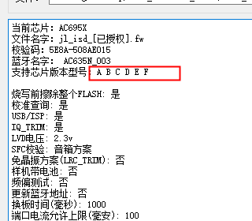

7.3. 版本不匹配错误
同一个型号的芯片，可能会因为芯片迭代，会有多个版本（如，A版、B版等）。
为了适配不同的芯片版本，SDK代码有时候需要一些改动。一些旧的SDK代码，如果不经改动直接在新版的芯片上面运行的时候，可能会出现问题。
为了防止误将错误的代码烧录到不匹配的芯片版本上，烧录的时候，烧录器会检查FW文件中的信息，确认芯片是否和FW匹配。
当两者不匹配的时候，会出现版本不匹配的错误。
如果在烧录器中出现该报错请及时联系提供SDK的人
7.3.1. 如何查看当前的芯片程序（FW/UFW文件）支持哪些芯片版本
在部署芯片程序的时候，可以查看当前部署的芯片程序（FW/UFW文件），支持哪些芯片版本。
部署完毕后，程序界面下面的信息框内，会有支持的芯片型号信息，如图芯片型号信息所示

芯片型号信息